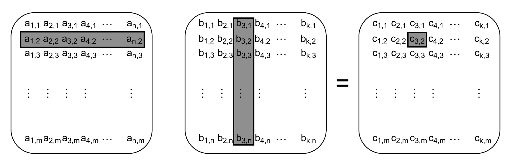

8.3 为多线程性能设计数据结构
8.1节了解了各种划分方法，8.2节中了解了影响性能的各种因素。如何在设计数据结构时，使用这些信息提高多线程代码的性能？与第6、7章中的问题不同，之前是关于如何设计安全、并发访问的数据结构。
当为多线程性能设计数据结构时，需要考虑竞争(contention)，伪共享(false sharing)和邻近数据(data proximity)，这三个对于性能都有着重大的影响的因素，改善数据布局，或者将数据进行修改。首先，让我们来看一个简单的方案：线程间划分数组。
8.3.1 划分数组元素
假设有一些偏数学的计算任务，比如：需要将两个很大的矩阵进行相乘。对于矩阵相乘来说，将第一个矩阵中的首行每个元素和第二个矩阵中首列每个元素相乘后再相加，从而产生新矩阵中左上角的第一个元素。然后，第二行和第一列，产生新矩阵第一列上的第二个结果，第二行和第二列，产生新矩阵中第二列的第一个结果，以此类推。如图8.3所示，高亮展示的就是在新矩阵中第二行-第三列中的元素产生的过程。

图8.3 矩阵相乘
现在，假设两个矩阵都有上千行和上千列，使用多线程来优化矩阵乘法。通常，非稀疏矩阵可以用大数组来代表，也就是第二行的元素紧随着第一行的，以此类推。为了完成矩阵乘法，就需要三个大数组。为了优化性能，需要仔细考虑数据访问的模式，特别是向第三个数组中写入的方式。
线程间划分工作的方式有很多，假设矩阵的行或列数量大于处理器的数量，可以让每个线程计算出结果矩阵列上的元素，或是行上的元素，亦或计算一个子矩阵。
回顾一下8.2.3和8.2.4节，对于数组来说访问连续元素是最好的方式，因为这会减少缓存的刷新，降低伪共享的概率。如果要让每个线程处理几行，线程需要读取第一个矩阵中的每一个元素，并且读取第二个矩阵上的相关数据，不过这里只需要对列进行写入。给定的两个矩阵是以行连续的方式存储，这就意味着当访问第一个矩阵的第一行的前N个元素，而后是第二行的前N个元素，以此类推(N是列的数量)。其他线程会访问每行的的其他元素，访问相邻的列，所以从行上读取的N个元素也是连续的，这将最大程度降低伪共享的几率。当然，如果N个元素已占有相应的空间，且N个元素也就是每个缓存行上具体的存储元素数量，就会让伪共享的情况消失，因为线程将会对独立缓存行上的数据进行操作。
另一方面，当每个线程处理一组行数据，就需要读取第二个矩阵上的数据，还要读取第一个矩阵中的相关行上的值，不过只需要对行上的值进行写入即可。因为矩阵是以行连续的方式存储，那么可以以N行的方式访问所有的元素。如果再次选择相邻行，这就意味着线程现在只能写入N行，就有不能被其他线程所访问的连续内存块。让线程对每组列进行处理就是一种改进，因为伪共享只可能有在一个内存块的最后几个元素和下一个元素的开始几个上发生，不过具体的时间还要根据目标架构来决定。
第三个选择——将矩阵分成小矩阵块？这可以看作先对列进行划分，再对行进行划分。因此，划分列的时候，同样有伪共享的问题存在。如果可以选择内存块所拥有行的数量，就可以有效的避免伪共享。将大矩阵划分为小块，对于读取来说是有好处的：就不再需要读取整个源矩阵了。只需要读取目标矩形里面相关行列的值就可以了。具体的来看，考虑1,000行和1,000列的两个矩阵相乘，就会有1百万个元素。如果有100个处理器，这样就可以每次处理10行的数据，也就是10,000个元素。不过，为了计算着10,000个元素，就需要对第二个矩阵中的全部内容进行访问(1百万个元素)，再加上10,000个相关行(第一个矩阵)上的元素，大概就要访问1,010,000个元素。另外，硬件能处理100x100的数据块(总共10,000个元素)，这就需要对第一个矩阵中的100行进行访问(100x1,000=100,000个元素)，还有第二个矩阵中的100列(另外100,000个)。这才只有200,000个元素，就需要5轮读取才能完成。如果读取的元素少一些，缓存缺失的情况就会少一些。
因此，将矩阵分成小块或正方形的块，要比使用单线程来处理少量的列好的多。当然，可以根据源矩阵的大小和处理器的数量，在运行时对块的大小进行调整。性能是很重要的指标时，就需要对目标架构上的各项指标进行测量，并且查阅相关领域的文献——如果只是做矩阵乘法，我认为这并不是最好的选择。
如果不做矩阵乘法，该如何进行呢？同样的原理可以应用于任何情况，这种情况就是有很大的数据块需要在线程间进行划分。仔细观察所有数据访问的各个方面，以及确定性能问题产生的原因。各种领域中，出现问题的情况都很相似：改变划分方式就能够提高性能，不需要对基本算法进行任何修改。
OK，我们已经了解了访问数组是如何对性能产生影响的，那么其他类型的数据结构呢？
8.3.2 其他数据结构中的访问模式
同样的考虑适用于数据结构的数据访问模式，如同优化对数组的访问：
尝试调整数据在线程间的分布，让同一线程中的数据紧密联系在一起。
尝试减少线程上所需的数据量。
尝试让不同线程访问不同的存储位置，以避免伪共享。
应用于其他数据结构上会比较麻烦。例如：对二叉树划分就要比其他结构困难，有用与没用要取决于树的平衡性，以及需要划分的节点数量。同样，树的属性决定了其节点会动态的进行分配，并在不同的地方进行释放。
现在，节点在不同的地方释放倒不是问题，不过处理器需要在缓存中存储很多东西。当多线程需要对树进行旋转时，就需要对树中的所有节点进行访问，不过当树中的节点只包括指向实际值的指针时，处理器只能从主存中对数据进行加载。如果访问线程正在修改数据，就能避免节点数据，以及树数据结构的伪共享。
和用互斥量来保护数据类似。假设有一个类，包含一些数据项和一个用于保护数据的互斥量(多线程环境下)。如果互斥量和数据项在内存中很接近，对于一个需要获取互斥量的线程来说是很理想的情况。因为在之前为了对互斥量进行修改，已经加载了需要的数据，所以需要的数据可能早已存入处理器的缓存中。不过，还有一个缺点：当其他线程尝试锁住互斥量时(第一个线程还没有是释放)，线程就能对数据项进行访问。互斥锁是作为“读-改-写”原子操作实现的，对于相同位置的操作都需要先获取互斥量，如果互斥量已锁，就会调用系统内核。这种“读-改-写”操作可能会让数据存储在缓存中，让线程获取的互斥量变得毫无作用。从目前互斥量的发展来看，这并不是个问题，因为线程不会直到互斥量解锁才接触互斥量。不过，当互斥量共享同一缓存行时，其中存储的是线程已使用的数据，这时拥有互斥量的线程将会遭受到性能打击，因为其他线程也在尝试锁住互斥量。
一种测试伪共享问题的方法：填充大量的数据块，让不同线程并发访问。
struct protected_data
{
std::mutex m;
char padding[65536]; // 如果你的编译器不支持std::hardware_destructive_interference_size，可以使用类似65536字节，这个数字肯定超过一个缓存行
my_data data_to_protect;
};
用来测试互斥量竞争或
struct my_data
{
data_item1 d1;
data_item2 d2;
char padding[65536];
};
my_data some_array[256];
用来测试数组数据中的伪共享。
如果这样能够提高性能，就能知道伪共享在这里的确存在。
当然，设计并发的时候有更多的数据访问模式需要考虑。